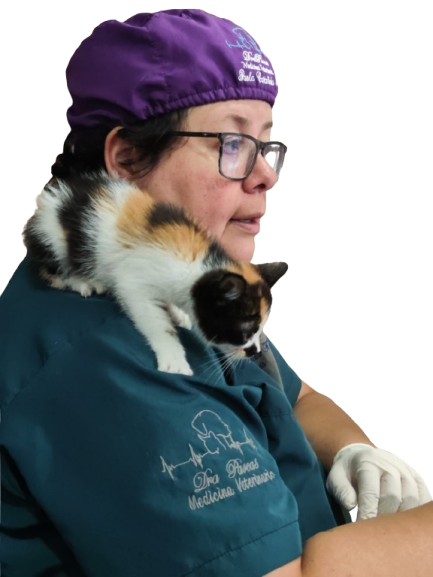

Dra Paocas
Medicina y cirugía veterinaria
Atención a domicilio · Asesoría en línea · Cirugía de tejidos blandos en quirófano aliado.
Soacha y sur de Bogotá

Atención a domicilio · Asesoría en línea · Cirugía de tejidos blandos en quirófano aliado.
Soacha y sur de Bogotá

Cirugía de tejidos blandos

Consulta a domicilio

Manejo postoperatorio

Atención clínica personalizada

Enfoque integral del paciente
Médica veterinaria zootecnista con experiencia en cirugía de tejidos blandos, manejo anestésico y atención clínica integral.
Enfoque en seguridad del paciente, recuperación controlada y acompañamiento postoperatorio.
📞 +57 319 528 7810
✉️ drapaocas@gmail.com